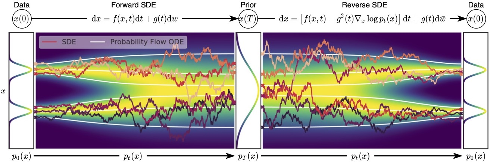
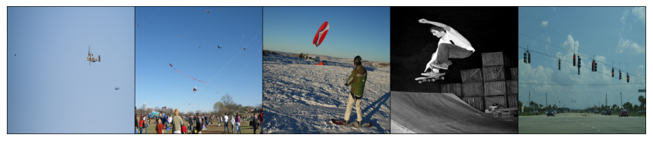

Mahatma Gandhi, and the Pancakes, and the Dragon, and You!
In this blog post, we explore whether Consistency-based Latent Models learn a similar representation to Vision Transformers, extending the Platonic Representation Hypothesis to Generative Models.
6.7960 Final Project, MIT
Introduction
The Platonic Representation Hypothesis posits that different architectures, even when trained on different modalities and tasks, ultimately converge toward a shared, underlying "ideal" representation of reality [1]. Recent research has shown alignment between large vision transformers (e.g., DINOv2) and large language models. But does this alignment extend to generative diffusion models?
Diffusion models learn a process that denoises a latent variable from a simple distribution (like a Gaussian) to complex, high-dimensional data. Traditional diffusion models rely on iterative randomized denoising, while advanced variants like DDIMs [2] and score-based methods [3] can deterministically map latent space to data and back. This bidirectionality can yield structured latent spaces, which have proven useful in tasks like image editing [3],[4],[5].
In this blog, we investigate whether running these generative diffusion models in reverse to obtain latent representations from data produces a latent space that aligns with the semantic, high-level representations of models like DINOv2 [6]. If the Platonic Representation Hypothesis holds for generative models, we should see such an alignment emerge, especially as models and training paradigms scale.
Background & Motivation
Generative diffusion models have become popular for tasks like image synthesis, inpainting, and editing. But beyond generation, they provide latent spaces that can be used to represent and manipulate data. Score-based models connect data space to latent space through a probability flow ODE, a process that is too slow to compute representations at scale for our study, to the point of impracticality.
Recently, however, consistency models [7] have emerged as a more efficient method, distilling a diffusion model into a network that can obtain high-quality samples in only a few iterations, enabling fast inference. Similarly, this idea can be used to obtain latents quickly from images, by training a consistency model to solve the ODE in reverse. Indeed, fellow researchers at Yandex trained such an invertible consistency distillation model [8] on the COCO dataset. Through this recent model, we were able to compute the representations for a generative model at scale, which was required to draw any meaningful conclusions from the research.
The ability to obtain latent representations from diffusion models raises exciting questions: if these latents reflect underlying structure in the data, do they resemble the "universal" representations learned by vision transformers, as predicted by the Platonic Representation Hypothesis [1]? Prior work has shown alignment between large LLMs and vision transformers as they scale. If diffusion-based models share or approach the same "ideal" representation, this would suggest a robust, modality-agnostic structure in learned features.
On a practical level, verifying representational alignment could improve interoperability between different model families. For example, if a diffusion model's latent space aligns well with DINOv2 embeddings, we can leverage either model's features for tasks like zero-shot retrieval or concept editing. Moreover, the notion that representations converge as models grow in scale and complexity suggests a fundamental simplicity underlying high-performance AI systems — a statistical "Platonic" reality [1].
Experiment
Experimental Setup
To investigate whether the Platonic Representation Hypothesis extends to generative diffusion models, we leverage a pretrained invertible consistency distillation (ICD) model from Yandex Research [8], originally trained on the COCO dataset. We compare its latent representations against those produced by a standard, high-performing vision transformer, DINOv2 [6], which prior work has shown aligns with other large models such as LLMs [1].
Our experiments focus on the COCO validation set, comprising approximately 41k general images. This choice ensures we can efficiently process a large corpus of images at scale, a critical requirement given the computational complexity of generating and extracting latents from a generative diffusion model. By restricting ourselves to the validation set rather than the full COCO dataset, we avoid excessive computational overhead while still maintaining diverse and representative image samples. Given that the ICD model is trained directly on COCO and DINOv2 was not, this comparison, if anything, may inherently favor ICD. However, at the scale that the two models are trained (330 thousand and 140 million images for the ICD model and DINOv2 respectively), on sufficiently large and varied datasets, we expect them to generalize well regardless of the testing dataset, mitigating any dataset-specific advantages or disadvantages.
For the purpose of alignment measurement, all our experiments were conducted with the mutual k-nearest neighbors (kNN) metric which was similarly employed by Huh et. al. [1] to measure representation alignment across models. However, while the same work uses a fixed k (k=10) for all measurements and varies batch sizes, due to the computational constraints of computing representations through generative models, batch sizes were fixed to be 128 while the value of k was varied from 4 to 64. We investigated the effect of explicit normalization of the latent data from the generative models on the model alignment, which we found to be void.
All experiments were conducted on Google Colab using an A100 GPU with 40GB of RAM. We found memory management to be non-trivial, requiring careful allocation and batching strategies. For instance, the ICD model's inference had to be performed in minibatches of 16 images, while we maintained an overall batch size of 128 to ensure the workflow fit into the available memory. Achieving these batch sizes necessitated efficient memory usage techniques and iterative code refinements.
Data Preprocessing
To ensure that each model receives an appropriately distributed input, we normalize and recenter the data for DINOv2 at its required mean and standard deviation, and we resize it to 224x224, the size used to train DINOv2. Meanwhile, the ICD model operates with inputs scaled between -1 and 1, so we rescale images accordingly.
Extending the ICD Implementation for Scalable Inference
While the Yandex ICD model codebase provided the core functionality for encoding and decoding images, we significantly adapted and extended it for scalable experiments. The original implementation did not support efficient batch processing in either forward or reverse directions. To address this, we introduced batch-level operations, optimized memory usage, and fixed a few bugs that hindered large-scale image processing. These improvements allowed us to leverage the ICD model for thousands of images with acceptable throughput and without GPU out-of-memory issues.
In practice, this meant writing our own data loading pipeline, implementing batched input processing, and ensuring the pipeline could seamlessly handle sequences of minibatches. With these modifications in place, we were able to fully exploit the ICD model's capabilities, enabling efficient large-scale comparisons between ICD-based latents and DINOv2 embeddings.
Results
Here are the results of the mutual nearest-neighbor metric computation for various values of k:
| k | 4 | 8 | 16 | 32 | 64 |
|---|---|---|---|---|---|
| Mutual-nearest neighbor metric (normalized) | 0.03085938 | 0.0605957 | 0.12958984 | 0.25427246 | 0.50630493 |
| Mutual-nearest neighbor metric (unnormalized) | 0.03115234 | 0.06113281 | 0.13005371 | 0.25402832 | 0.50628052 |
To put the results in perspective, if the consistency model were learning completely random representations, we'd expect the alignment to be k divided by (batch size-1), which is very close to the numbers we see above. The ICD representations are NOT aligned with the DINOv2 representations according to the mutual nearest-neighbor metric!
To verify this result and to ensure that no implementation bug were present in the batched version we designed to compute the representations, we ran the reverse consistency model on the latents from a small minibatch to verify the latents indeed reconstruct the images, and they were reconstructed at stunning accuracies:
We then manually investigated the k-nearest-neighbors result for these 4 images, within a batch of size 128. For each image (represented in two consecutive rows), the first row are the 4 nearest neighbors according to the ICD representations, and the second row are the 4 nearest neighbors according to the DINOv2 representations:
We saw the DINOv2 representations actually carry semantic understanding that aligns with our brains' representations, while the ICD representations are best summarized as “Mahatma Gandhi, and the pancakes, and the dragon, and you” [9].
Implications & Conclusions
We interpret this result in the light of the hypotheses mentioned in [1] for why representations are converging. In terms of model capacity, ICD uses the same architecture as Stable Diffusion and it certainly boasts a large capacity. Task generality? It's a bit more grey. These models learn a latent space rich enough to cover tasks ranging from image editing to impainting to superresolution, but it's unclear if their representations are suitable for e.g. classification. Similarly, the DINOv2 representations might be difficult to use for more “generative” tasks. Perhaps it is the simplicity bias that is least honored by ICD. They're forced to learn a mapping that distributes the latents as a Gaussian.
While the k-nearest-neighbors analysis on ICDs shows complete rubbish that us mere mortals can't interpret, their latent space definitely has another form of structure that learns a more “generative” representation of the data, enabling them to solve tasks that can be daunting even for humans. The best conclusion we have is that a form of the platonic representation hypothesis could very much still hold, where models of sufficient capacity trained to solve the same class of tasks could converge via simplicity bias to the same representation, but the ability to be generative restricts the generality of that class of tasks, yielding a different-looking latent space. Until a fundamentally different generative model that scales without using the probability flow ODE comes out, we will never know ;)
References
- [1] Huh, M., Cheung, B., Wang, T., & Isola, P. (2024). The Platonic Representation Hypothesis (arXiv:2405.07987).
- [2] Song, J., Meng, C., & Ermon, S. (2022). Denoising diffusion implicit models (arXiv:2010.02502).
- [3] Song, Y., Sohl-Dickstein, J., Kingma, D. P., Kumar, A., Ermon, S., & Poole, B. (2021). Score-based generative modeling through stochastic differential equations (arXiv:2011.13456).
- [4] Ling Yang, Zhilong Zhang, Yang Song, Shenda Hong, Runsheng Xu, Yue Zhao, Wentao Zhang, Bin Cui, and Ming-Hsuan Yang. 2023. Diffusion Models: A Comprehensive Survey of Methods and Applications. ACM Comput. Surv. 56, 4, Article 105 (April 2024), 39 pages.
- [5] Kawar, B., Zada, S., Lang, O., Tov, O., Chang, H., Dekel, T., Mosseri, I., & Irani, M. (2023). Imagic: Text-based real image editing with diffusion models. Proceedings of the IEEE/CVF Conference on Computer Vision and Pattern Recognition (CVPR), 6007–6017.
- [6] Oquab, M., Darcet, T., Moutakanni, T., Vo, H., Szafraniec, M., Khalidov, V., Fernandez, P., Haziza, D., Massa, F., El-Nouby, A., Assran, M., Ballas, N., Galuba, W., Howes, R., Huang, P.-Y., Li, S.-W., Misra, I., Rabbat, M., Sharma, V., Synnaeve, G., Xu, H., Jegou, H., Mairal, J., Labatut, P., Joulin, A., & Bojanowski, P. (2024). DINOv2: Learning robust visual features without supervision (arXiv:2304.07193).
- [7] Song, Y., Dhariwal, P., Chen, M., & Sutskever, I. (2023). Consistency models (arXiv:2303.01469).
- [8] Starodubcev, N., Khoroshikh, M., Babenko, A., & Baranchuk, D. (2024). Invertible consistency distillation for text-guided image editing in around 7 steps (arXiv:2406.14539).
- [9] (2024, December 10). Mahatma Gandhi, and the pancakes, and the dragon, and you! [Video]. YouTube.